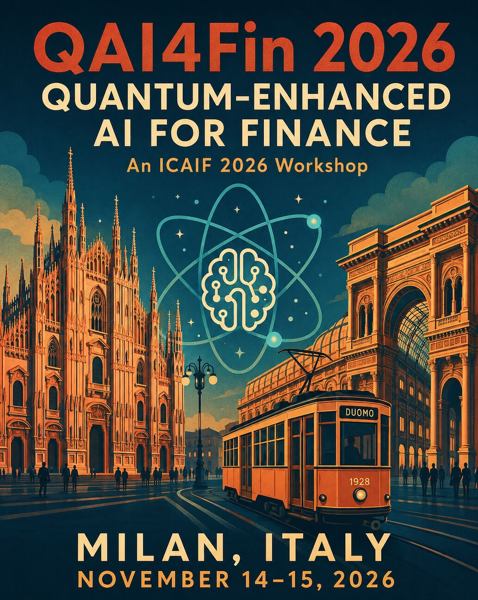
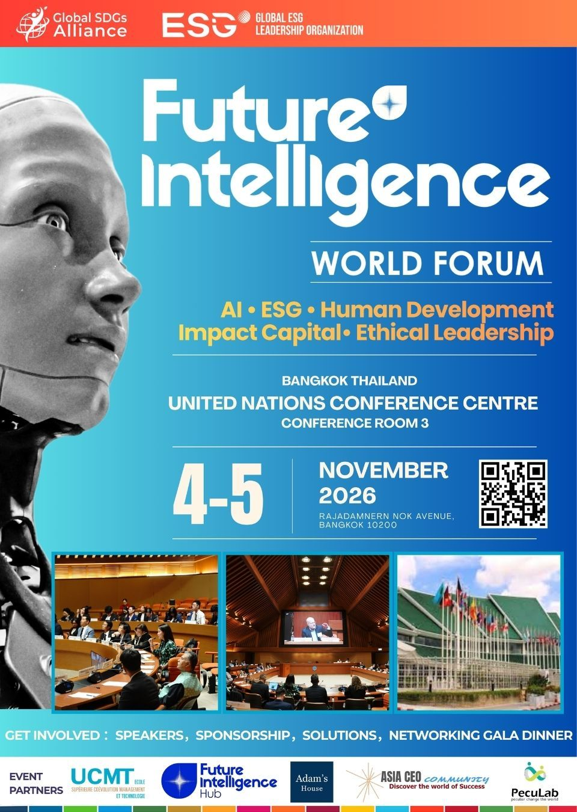

Yun-Cheng (Pecu) Tsai · 共同組織者
QAI4Fin 2026：量子增強金融決策 AI
聚焦混合量子—經典與量子啟發式 AI 在預測、風險、交易、投資組合控制、詐欺偵測、情境生成與金融決策上的研究與實務，並強調可重現基準及金融等級驗證。
投稿截止：2026 年 9 月 30 日 23:59 AoE
西雅圖篇章 · 活動、工作坊與國際交流
依日期整理我移居美國後開始推進的國際交流、研究社群、工作坊與公開學習工作。
活動紀錄 · 由新到舊
依實際舉辦日期由新到舊排列，不論活動正在接受申請、即將舉行，或已留下成果紀錄。

Yun-Cheng (Pecu) Tsai · 共同組織者
聚焦混合量子—經典與量子啟發式 AI 在預測、風險、交易、投資組合控制、詐欺偵測、情境生成與金融決策上的研究與實務，並強調可重現基準及金融等級驗證。
投稿截止：2026 年 9 月 30 日 23:59 AoE

PecuLab · 活動夥伴
ESGIN 將匯聚 250 位經篩選的國際代表，從商業、投資、政策與創新角度探索影響下一個十年的十大議題，建立策劃式連結與跨國合作機會。

Yun-Cheng (Pecu) Tsai 每日以 co-supervisor 身分參與的五日跨國 AI 營隊，串連博士班講師、在地高中生助教、台灣與美國不同州學生、前沿 AI 學習、研究參訪與 Capstone 成果展示。

一場由青少年共同籌備與帶領的五日營隊：學生完成互動式 LEGO 專題並上台發表，隊輔也在真實責任中成長為更成熟的帶領者。


一場 15 分鐘的 Agentic AI 短講，延伸成可動手執行的 coding lab：學生能在 Colab 開啟完整 notebook，理解交易系統流程，並直接瀏覽 CNN 與 DQN 的互動成果。